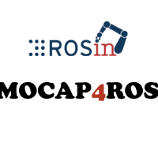

MOCAP4ROS2 – Motion Capture Systems in ROS 2
- Type
- ROSIN Focused Technical Project, coordinated with the Eurobench project
- Funding
- ROSIN – European Union’s Horizon 2020 research and innovation programme, grant agreement No 732287
- Duration
- 17 December 2019 – 31 December 2020
- PI
- Francisco Martín Rico
- Links
- Documentation · GitHub
About the project
MOCAP4ROS2 standardises motion capture (mocap) systems in ROS 2. It provides standard interfaces that any mocap driver should respect when publishing its data, and that any mocap application can expect, plus tools to monitor and control one or many mocap systems running at the same time. The software is still maintained by the lab.
Features
- Drivers for the major vendors: Vicon, OptiTrack and Qualisys.
- Standard interfaces for motion capture data: markers and rigid bodies.
- Interfaces and tools to control mocap systems: an RQT-based GUI and
mocap4r2cli, an extension of ros2cli (mocap4r2). - Apps to visualise mocap data as markers and to provide ground truth for robotic experiments.
- A dummy mocap system to help developers create tools and apps, and Gazebo support.
MOCAP4ROS2 was funded as a Focused Technical Project by ROSIN – ROS-Industrial Quality-Assured Robot Software Components. ROSIN has received funding from the European Union’s Horizon 2020 research and innovation programme under grant agreement No 732287.